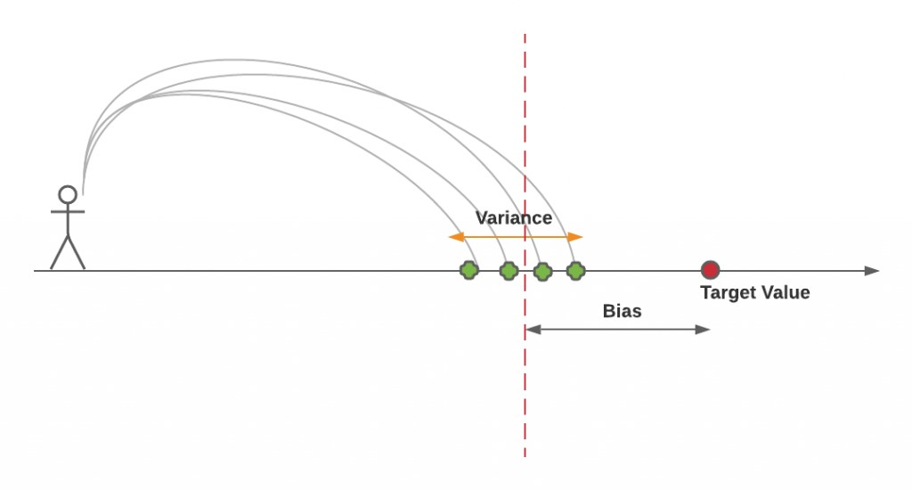
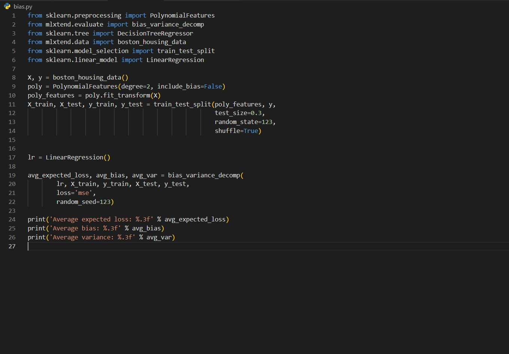
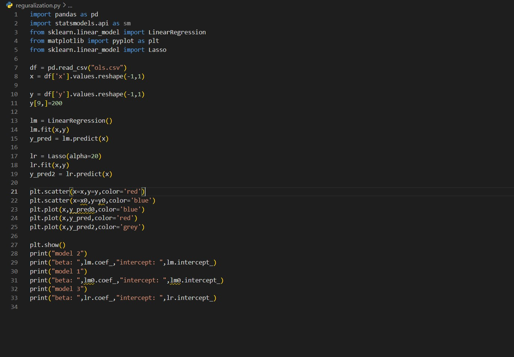
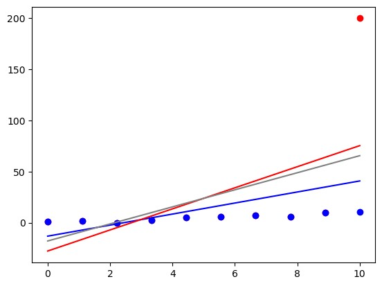

Debugging Machine Learning Model/ Bias Variance Tradeoff

Discussion Topic
- Why/ how is it to debug ML/DL model?
- Why is it difficult to achieve it?
- What is Bias?
- What is Variance?
- Debugging Example?
- How to reduce bias and variance?
- What is Regularization?
- Practical of Bias Variance and Regularization?
First let's have a quiz
Let's Start the Discussion
Model selection within the limit of the specified error is a central problem in a supervised learning. In predictive modeling, the most important question is what is the accuracy of the model and how it can be reduced. The answer lies in error function, precisely it’s two nonsense son bias and variance.
One wants to choose a model that both accurately captures the regularities in its training data, but also generalizes well to unseen data. Unfortunately, it is typically impossible to do both simultaneously. Simpler model has low/high variance but high bias. Similarly, complex model has low bias but high variance. Bias variance problem is the conflict in trying to simultaneously minimize these two sources of error that prevented supervised learning algo from genializing beyond training.
Before, going further, we need to understand bias and variance of the model. Bias and variance are both important measures of quality of estimator/model. Bias model is also called underfitting and Variance model is called overfitting.
Bias error is an error from erroneous assumption in the learning algo. While, variance is an error from sensitivity to small fluctuations in the training set.
Prediction Error = Error due to biasness of the model (detected during training) + Error due to sensitivity of the model (detected during testing)
Prediction Error = (Bias)**2 + Variance + Fixed Noise
Mathematically,
Bias = E[_theta] – theta
Variance = E[(E(_theta) - _theta)^2]
The derivation of the above equation is well known so I am not going in that direction.
To effectively debug a machine learning model, it is crucial to gain a comprehensive understanding of the factors that contribute to errors. These errors can arise from various sources, including bias, variance, or noise. By comprehending the specific influences at play, one can undertake targeted debugging efforts.
Let’s take one example of how to do debugging.

In the above picture, I have taken error vs number of training instances and plotted training error, test error and acceptable test error (which the client is happy to take it). Moreover, I have drawn to region one in the left-hand side another in the right-hand side.
Now, one person starts building model. What should once be taken to build a good model? Before, going further, one quick question. Which regime has highest bias and highest variance?
Regime 1 has highest variance and regime 2 has highest bias.
In regime 1, the reason for the highest variance is evident through the substantial disparity between the training error and the test error. This notable distinction highlights the presence of significant variance within the model. Conversely, in the second scenario, where the error surpasses the acceptable test error threshold, it becomes apparent that the model is undoubtedly biased.
Now, observe how bias and variance can be reduced. The bias-variance tradeoff can be understood as trade off between a simplicity and complexity.
The picture above clearly illustrates that increasing the number of training examples, or adding more data, has a significant impact on reducing training error and, consequently, reducing variance. In addition, techniques such as bagging and increasing regularization, which include methods like early stopping, lasso, and ridge, also effectively mitigate high variance.
TO reduce high bias, there are number of methods such as kernelization, adding features, boosting and decreasing regulization

From the picture, it is very evident that how bias and variance contribute in the error with the increasing model complexity.
Now talk about Regularization
What is the motivation of regularization? How it is influencing the bias and variance of the model ?
Regularization is a concept derived from the realm of regression, where a crucial obstacle lies in mitigating the impact of outliers. Outliers can exert excessive influence on the parameters of a linear regression model, thereby necessitating a means to restrict the magnitude of these parameters. Consequently, it becomes imperative to incorporate certain constraints into the loss function in order to effectively address this issue.
Before moving ahead, let’s understand some maths intuition of the effect of parameters on the output.
Y = 2x + 4x**2
Here, x**2 variable has more effect than x variable because the parameters magnitude. So if the beta value of the regression has some high value because of the influence of outlier, we have to limit this influence by introducing some constraints.
Let’s take one example of cost function
Cost function = (b-2)**2
We need to find some b which will make this cost function zero, which is 0. But the problem is at this value variance will be very high. So, we need to stop at some lower value to limit the effect of variance. some b<1
Same as if b is negative b>-1
Combining both will give |b| <1
So the error function is
(y-bx+bo)**2 and |b|<1
Combining both on introducing langrage constant
(y-bx+bo)**2 + lamda * |b|
Lamda is the regularization factor.
So, high lamda will drag the value of error towards smaller b and hence reduce the variance from the model.
Memes on Internet about Bias Variance
Python code on Finding Bias and Variance in the model:

Average expected loss: 113.497
Average bias: 24.059
Average variance: 89.437
Python code on Regularization:
Model

model 1
beta: [1.02159925] intercept: -0.17003637007120354
model 2
beta: [[10.3114334]] intercept: [-27.69547091]
model 3
beta: [8.34779704] intercept: [-17.87728909]
For More Interesting and Knowlegeable Blog Kindly Visit Our Blog Section !